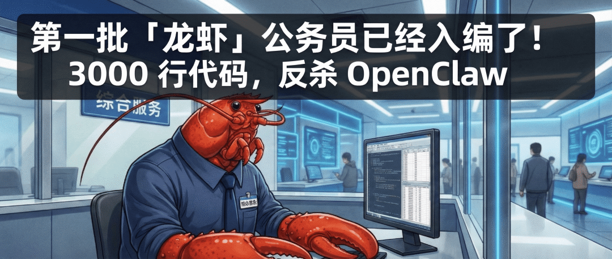

我做了一个 OpenClaw「龙虾」养成指南。
用的是字节飞书的「AI 知识库」。

安全报告、部署教程、漏洞分析、配置模板，全在里面。
现在你问它「OpenClaw公网裸奔的原因及安全风险有哪些」，AI 直接从我的资料里找答案，标出哪篇文档的哪个段落。甚至还是带图的。

「龙虾」系列我还在持续更新，后续的新文章会同步进知识库。
限时免费加入，先到先得。
传送门：https://ask.feishu.cn/shared-space/7614547434433154013?referrer=aigap

你也可以搭一个自己的知识库。5 分钟搞定，免费。
写了两年公众号，821 篇原创文章。
前天那篇《第一批「龙虾」公务员入编，3000 行代码反杀 OpenClaw》，不到 12 小时 2 万多阅读。
然后后台就炸了。
「之前的 OpenClaw 安全分析在哪？」
「部署教程能再发一次吗？」
800 多篇文章埋在历史消息里，我自己找都费劲。
所以我一直在找一个好用的 AI 知识库方案。
去年我出过一篇「DeepSeek 搭建本地知识库」教程，阅读量几十万。但那个只能算 1.0。
今天要说的飞书「AI 知识库」，是 2.0。
话不多说，直接开始。
打开飞书知识问答。
网页端地址 ask.feishu.cn，或者飞书桌面客户端左侧菜单栏找到「知识问答」。
「共享知识库」->「我管理的」，旁边有个加号，点它。

弹出「创建共享知识库」窗口。
名称，50 字以内。比如我的是「龙虾 OpenClaw 养成指南｜从爆火到入编」。
描述，150 字以内。这个信息会展示在知识库广场。
推荐问题，直接选「AI 自动生成」就行。

付费设置，三个选项。免费、兑换码、或者线上支付加入。
按需选择。比如我这个「龙虾」知识库就先选的免费。后面随时可以改。
权限选「公开发布」。
下面有个「允许成员查看知识库资料内容」的开关。
打开，加入知识库的人都能看到你投喂的资料。关掉，让 AI 做中间层，你的原始资料有保护。
最后点「创建」。

知识库建好了，是空的。下一步，喂资料。

点进知识库详情页，下方有「添加资料」。

飞书文档支持的格式，AI 知识库都支持。比如 Word、PDF、PPT、表格、多维表格。

我把之前写的 OpenClaw 系列文章的内容整理好，全部传上去。从《爆火始末》到《部署接入》，再到《龙虾公务员》，一篇不落。

如果你之前就用飞书知识库，更简单。
打开已有知识库，「分享设置」-> 打开「互联网分享」->「发布为问答知识库」。一键升级，原来的内容自动变成 AI 可问答的资料。
上传后 AI 需要一点时间消化（向量化存储）。
资料投喂完，来试试效果。
划重点，支持联网搜索，需要手动开启。
也可以切换模型。

我问「OpenClaw 爆火的原因及特点有哪些」。
AI 先深度思考，然后从我的文章里提取信息回答，甚至还配上了文章插图。
索引标识也是可以点击跳转的。

再试一个。「怎么安装 OpenClaw」。
安装步骤清晰明了，配置向导里每一步该选什么都列好了。
比你自己翻答案效率高得多。

到这里，一个免费的 AI 知识库已经搭好了。
如果你想做付费知识库，多一步。在知识库详情页的「付费设置」里，打开「线上支付加入」。
价格你定，0 到 6000 元。有效期五档：一个月、三个月、半年、一年、永久。

都设置完，就可以分享出去了。
支持二维码和链接。

如果创建时选了「公开发布」，你的知识库会自动出现在飞书的「知识库广场」上。
广场按精选、最热、最新排列，支持搜索。
已经有不少大佬在玩了，AI 学习、跨境电商、新媒体运营各种主题都有。
相当于一个知识库的应用商店，你的知识库挂上去，不用自己推广，逛广场的人就能发现你。

「龙虾」养成指南已经上线，文档权限全开，持续更新，限时免费加入。
https://ask.feishu.cn/shared-space/7614547434433154013?referrer=aigap
接下来我会把 800 多篇文章的精选内容整理成第二个知识库，「AI信息Gap 精选」。搭好了第一时间通知你。
有内容积累的，也可以搭一个试试。
有问题留言。
我是木易，Top2 + 美国 Top10 CS 硕，现在是 AI 产品经理。
关注「AI信息Gap」，让 AI 成为你的外挂。
